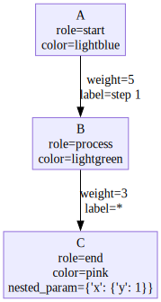

# Create example graph with node and edge properties
G = nx.DiGraph()
# Add nodes with properties
G.add_node('A', role='start', color='lightblue')
G.add_node('B', role='process', color='lightgreen')
G.add_node('C', role='end', color='pink',nested_param = {'x':{'y':1}})
# Add edges with properties
G.add_edge('A', 'B', weight=5, label='step 1')
G.add_edge('B', 'C', weight=3, label='*')
# Draw the graph
# draw_nx(G,subgraph_colors={'green':['C','B']})Visualization
Rendering graphs with GraphViz
display_in_ipython
display_in_ipython (obj)
is_ipython
is_ipython ()
graph_to_graphviz_spec
graph_to_graphviz_spec (g, label_key=None, drop_keys=None, **kwargs)
edge_description
edge_description (g, edge, drop_keys=None, **kwargs)
node_description
node_description (g, node, label_key=None, drop_keys=None, **kwargs)
wrap_text
wrap_text (text, width=None, **kwargs)
graph_to_graphviz_spec(G)([{'name': 'A', 'label': 'A\nrole=start\ncolor=lightblue'},
{'name': 'B', 'label': 'B\nrole=process\ncolor=lightgreen'},
{'name': 'C',
'label': "C\nrole=end\ncolor=pink\nnested_param={'x': {'y': 1}}"}],
[{'tail_name': 'A', 'head_name': 'B', 'label': 'weight=5\nlabel=step 1'},
{'tail_name': 'B', 'head_name': 'C', 'label': 'weight=3\nlabel=*'}])draw_graphviz
draw_graphviz (node_data, edge_data, name=None, direction='TB', format='svg', node_attrs=None, edge_attrs=None, graph_attrs=None, **kwargs)
check_graphviz_installed
check_graphviz_installed ()
draw_nx
draw_nx (g:networkx.classes.digraph.DiGraph, direction='TB', name=None, format='svg', label_key=None, drop_keys=None, node_attrs=None, edge_attrs=None, graph_attrs=None, ret_dot=False, **kwargs)
drawing = draw_nx(G,name=None,engine='dot')
drawing
drawing = draw_nx(G,name=None,engine='dot',ret_dot=True)
print(drawing.source)digraph {
labelloc=t rankdir=TB
A [label="A
role=start
color=lightblue" color="#9370DB" fillcolor="#ECECFF" shape=box style=filled]
B [label="B
role=process
color=lightgreen" color="#9370DB" fillcolor="#ECECFF" shape=box style=filled]
C [label="C
role=end
color=pink
nested_param={'x': {'y': 1}}" color="#9370DB" fillcolor="#ECECFF" shape=box style=filled]
A -> B [label="weight=5
label=step 1" color=black]
B -> C [label="weight=3
label=*" color=black]
}
display_in_ipython(drawing)# this is how we tell ipython what to display
drawing._repr_mimebundle_(){'image/svg+xml': '<?xml version="1.0" encoding="UTF-8" standalone="no"?>\n<!DOCTYPE svg PUBLIC "-//W3C//DTD SVG 1.1//EN"\n "http://www.w3.org/Graphics/SVG/1.1/DTD/svg11.dtd">\n<!-- Generated by graphviz version 12.2.1 (20241206.2353)\n -->\n<!-- Pages: 1 -->\n<svg width="179pt" height="335pt"\n viewBox="0.00 0.00 179.25 335.00" xmlns="http://www.w3.org/2000/svg" xmlns:xlink="http://www.w3.org/1999/xlink">\n<g id="graph0" class="graph" transform="scale(1 1) rotate(0) translate(4 331)">\n<polygon fill="white" stroke="none" points="-4,4 -4,-331 175.25,-331 175.25,4 -4,4"/>\n<!-- A -->\n<g id="node1" class="node">\n<title>A</title>\n<polygon fill="#ececff" stroke="#9370db" points="135.62,-327 35.62,-327 35.62,-269.5 135.62,-269.5 135.62,-327"/>\n<text text-anchor="middle" x="85.62" y="-309.7" font-family="Times,serif" font-size="14.00">A</text>\n<text text-anchor="middle" x="85.62" y="-293.2" font-family="Times,serif" font-size="14.00">role=start</text>\n<text text-anchor="middle" x="85.62" y="-276.7" font-family="Times,serif" font-size="14.00">color=lightblue</text>\n</g>\n<!-- B -->\n<g id="node2" class="node">\n<title>B</title>\n<polygon fill="#ececff" stroke="#9370db" points="139,-200.5 32.25,-200.5 32.25,-143 139,-143 139,-200.5"/>\n<text text-anchor="middle" x="85.62" y="-183.2" font-family="Times,serif" font-size="14.00">B</text>\n<text text-anchor="middle" x="85.62" y="-166.7" font-family="Times,serif" font-size="14.00">role=process</text>\n<text text-anchor="middle" x="85.62" y="-150.2" font-family="Times,serif" font-size="14.00">color=lightgreen</text>\n</g>\n<!-- A->B -->\n<g id="edge1" class="edge">\n<title>A->B</title>\n<path fill="none" stroke="black" d="M85.62,-269.31C85.62,-252.41 85.62,-230.6 85.62,-211.99"/>\n<polygon fill="black" stroke="black" points="89.13,-212.11 85.63,-202.11 82.13,-212.11 89.13,-212.11"/>\n<text text-anchor="middle" x="119" y="-238.2" font-family="Times,serif" font-size="14.00">weight=5</text>\n<text text-anchor="middle" x="119" y="-221.7" font-family="Times,serif" font-size="14.00">label=step 1</text>\n</g>\n<!-- C -->\n<g id="node3" class="node">\n<title>C</title>\n<polygon fill="#ececff" stroke="#9370db" points="171.25,-74 0,-74 0,0 171.25,0 171.25,-74"/>\n<text text-anchor="middle" x="85.62" y="-56.7" font-family="Times,serif" font-size="14.00">C</text>\n<text text-anchor="middle" x="85.62" y="-40.2" font-family="Times,serif" font-size="14.00">role=end</text>\n<text text-anchor="middle" x="85.62" y="-23.7" font-family="Times,serif" font-size="14.00">color=pink</text>\n<text text-anchor="middle" x="85.62" y="-7.2" font-family="Times,serif" font-size="14.00">nested_param={'x': {'y': 1}}</text>\n</g>\n<!-- B->C -->\n<g id="edge2" class="edge">\n<title>B->C</title>\n<path fill="none" stroke="black" d="M85.62,-142.6C85.62,-126.01 85.62,-104.58 85.62,-85.45"/>\n<polygon fill="black" stroke="black" points="89.13,-85.71 85.63,-75.71 82.13,-85.71 89.13,-85.71"/>\n<text text-anchor="middle" x="111.5" y="-111.7" font-family="Times,serif" font-size="14.00">weight=3</text>\n<text text-anchor="middle" x="111.5" y="-95.2" font-family="Times,serif" font-size="14.00">label=*</text>\n</g>\n</g>\n</svg>\n'}